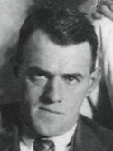

GMBH Tree - Family Card
GMBH Tree - Family Card
Philip L. Denomme(28 Feb 1876 - 28 Jun 1943)Henry Rau(2 Aug 1869 - 6 Aug 1933)
Anne Durand(17 Oct 1874 - 24 Mar 1948)Philomene Laporte(2 Aug 1873 - 5 May 1953)
m. 26 Oct 1920, Zurich, Huron Co, Ontario, Canada


b. 25 Aug 1900, St. Joseph, Huron Co, Ontario, Canada
d. 17 Jun 1983, Clinton, Ontario, Canada
br. Clinton, Huron County, Ontario, Canada
occ. Farmer
edu.
rel. Catholic
bp. 25 Aug 1900, Ontario, Canada
cen. 1901, Hay Twp, Huron Co, Ontario, Canada

b. 15 Oct 1899, St. Joseph, Huron Co, Ontario, Canada
d. 27 Jan 1991, Clinton, Ontario, Canada
br. Clinton, Huron County, Ontario, Canada
occ.
edu.
rel. Catholic
bp. 15 Oct 1899, Ontario, Canada
cen. 1901, Stanley, Huron Co, Ontario, Canada
Children
> Geraldine Marie (Gerry) Denomme(2 Sep 1921 - 1 Dec 2012)
Cecile Denomme(1923 - 1991)
Wilfred Joseph “Dina” Denomme(19 Aug 1925 - 2 Oct 2003)
John Paul Denomme(1928 - bef 2003)
Francis Charles Denomme(29 Jan 1932 - 8 Apr 1979)
Bernice Denomme(1 May 1934 - 27 Feb 2015)